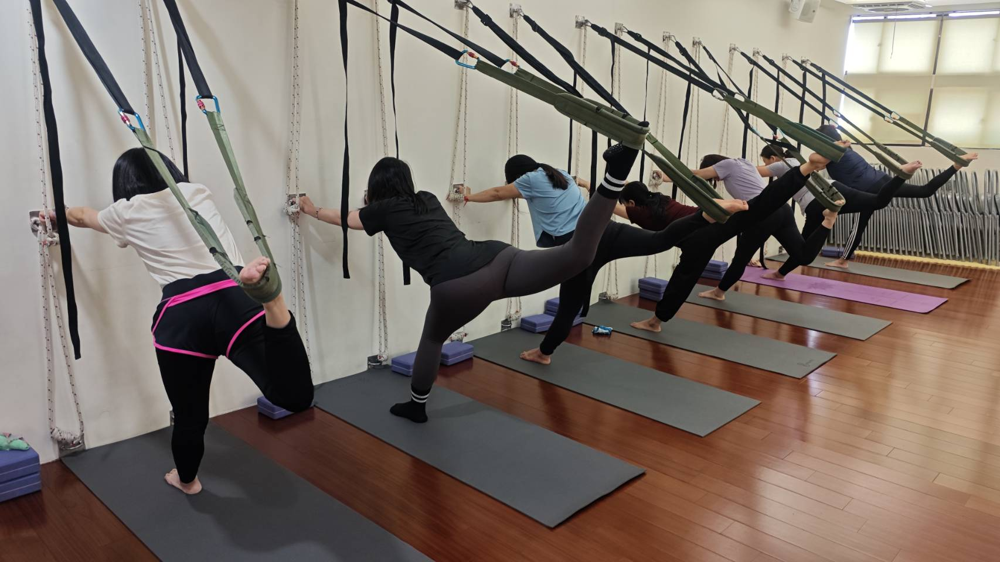
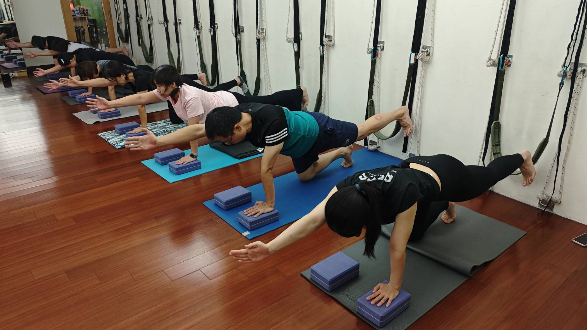

骨盆前傾用壁繩瑜伽怎麼練？看懂支點與動作對位

在教室跟著老師往前一步，你才剛抓住繩帶，腰就又想拱起來。這時只想知道：繩子到底該幫我做什麼？
壁繩練習可用牆面的固定點改變支撐條件，讓學員比較骨盆、肋骨與腳底在小幅移重時怎麼配合。老師可調整握點、站距或幅度，觀察鬆一點拉繩後能否自然呼吸和回位。這是課堂中的動作觀察方式，單次練習無法判定骨盆前傾成因或預測站姿外觀變化。
骨盆前傾用壁繩時，老師怎麼調整支點？
雙腳仍有地面支撐時，老師有時會先讓人改握點高度，看看輕握和用力把身體拉起來的感受有什麼不同。也可以先縮短站距，讓你停在還能舒服呼吸的位置。想弄清楚骨盆前傾、小腹外觀和站姿角度的關係，原理篇有完整說明；對繩帶陌生，可先看壁繩的固定支點與基本用法。

👆 手機版可左右滑動
| 課堂想觀察什麼 | 支點怎麼改 | 觀察線索 |
|---|---|---|
| 往前移重時腰先拱 | 縮短站距，手握固定支點，腳底保留接觸。 | 對照呼吸與肋骨位置有沒有改變。 |
| 想抓緊繩才能停住 | 把幅度縮小，確認不用靠手臂把身體拉回。 | 能否慢慢回到起始位置。 |
| 想讓腰貼平或硬夾臀 | 和老師比較自然站法與刻意用力兩種感受。 | 記下哪種站法容易維持自然呼吸。 |
借力時怎麼知道自己又開始用腰硬撐？
可以先比較同一個動作在不同站距的感受。若往前一點就抬胸、憋氣，或覺得回不到起始位置，先告訴老師並縮小幅度。對教室節奏沒把握，可先讀零基礎怎麼從小幅度開始；想把站姿影像和上課感受一起看，可以了解體態檢測與老師解讀。
本文是一般動作與課程資訊。若練習引發明顯不適，先停止並依情況尋求醫療專業評估。
常見問題
繩帶借力就是把身體重量全部掛上去嗎？
入門可先保留腳底著地，老師會因動作與個人狀態選支點和幅度。
上課需要把腰壓平才算對位嗎？
可以把自然呼吸、腳底支撐及能否回位當成觀察線索，不必硬把腰壓平。
做完一次就能讓小腹變平嗎？
小腹外觀受多種條件影響，一次課能記下的是動作感受與支點差異。
可以自己用門框綁繩模仿嗎？
教室壁繩有固定支點與老師指導，建議先在合適的環境確認操作方式。
練習過程有不舒服怎麼辦？
先停下並告知老師。疼痛、麻木或無力持續時，先尋求醫療評估。
如果還不確定是久坐、站久還是提東西時最有感，可以先記下一個情境。開始免費體態訊號掃描。